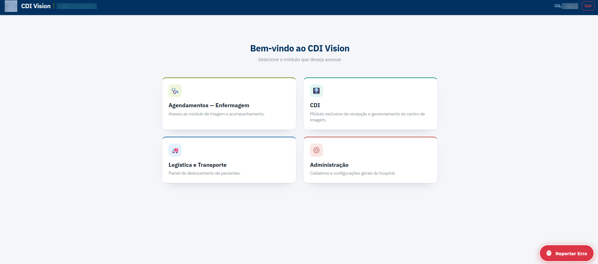
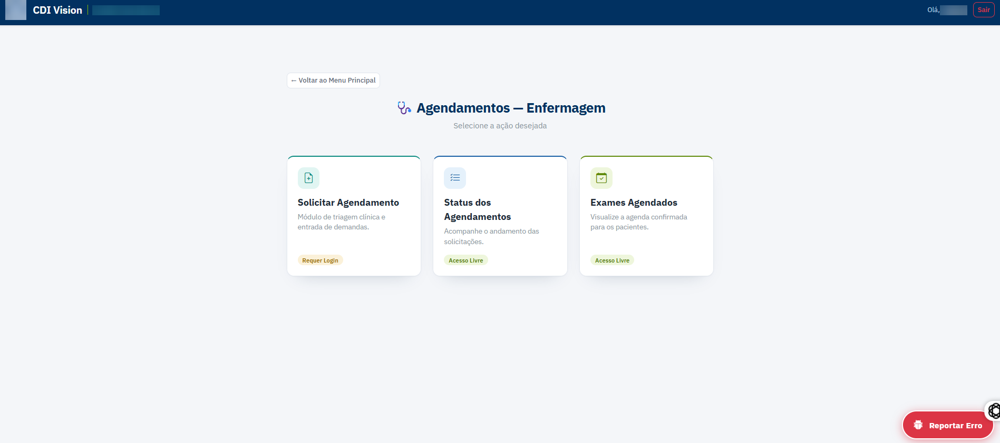
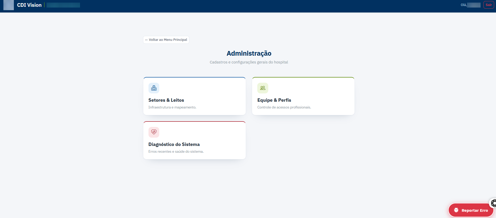
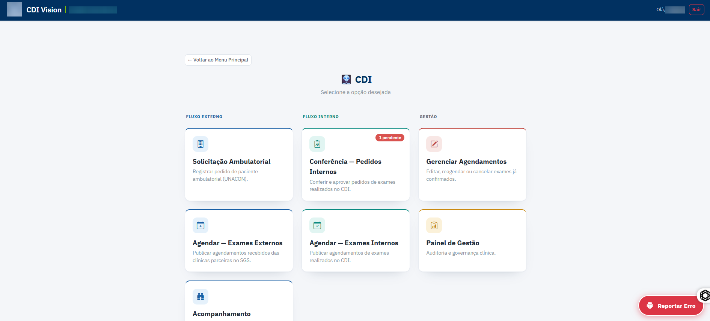
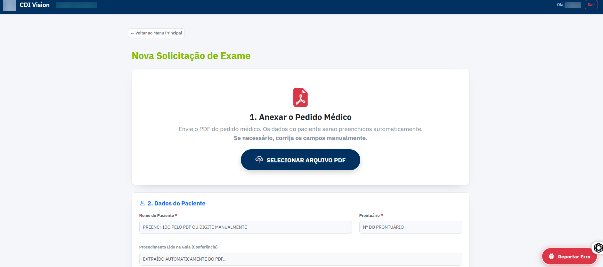
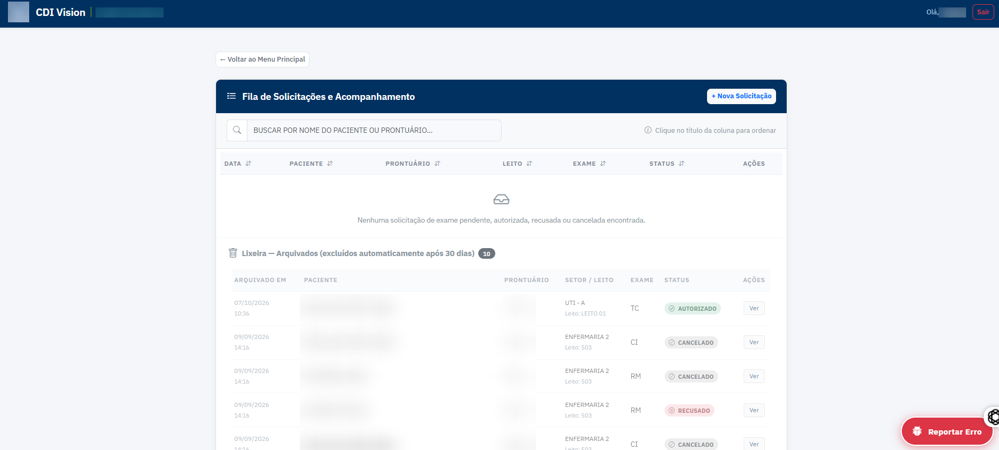
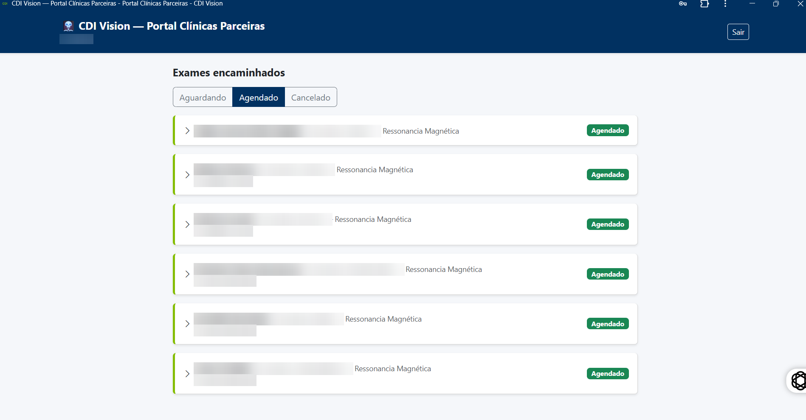

FOLHA Nº 01 — DETALHES DO PROJETO
CDI Vision
Gestão do Fluxo de Exames de Imagem Hospitalares
Sistema que coordena o caminho completo de um exame de imagem, do pedido médico até o agendamento na clínica parceira que executa o exame. Substitui telefonemas, papel e planilhas por um fluxo rastreável, com autorização, cotas por contrato e um portal próprio para as clínicas.
FOLHA Nº 02 — O DESAFIO
Um exame, muitas mãos
Num hospital, um exame de imagem passa por várias mãos: o médico solicita, a enfermagem registra o pedido, o centro de diagnóstico confere e autoriza, a gestão controla a cota contratada de cada clínica parceira, e a clínica externa agenda e devolve a data. Sem um sistema, cada etapa dependia de telefone, papel e planilha, e era difícil saber em que ponto estava cada pedido.
O desafio era integrar todo esse fluxo lidando com dados de saúde: as clínicas parceiras precisavam de acesso pela internet, mas o servidor com os dados dos pacientes não podia ficar exposto fora da rede do hospital.
FOLHA Nº 03 — A SOLUÇÃO
Interface e Funcionalidades
O CDI Vision é dividido em módulos por perfil de acesso (enfermagem, centro de diagnóstico, transporte e administração), e cada funcionário vê só o que precisa. Nas imagens abaixo, o nome da instituição, os logins e todos os dados de pacientes (nomes, prontuários e telefones) foram desfocados.

Hub de Módulos
Ponto de entrada após o login: cada funcionário vê os módulos do seu perfil, entre Agendamentos da Enfermagem, CDI, Logística e Transporte de pacientes e Administração. O controle de acesso é checado no servidor antes de cada tela, não só escondido na interface.

Enfermagem
Registrar no sistema os exames solicitados pelo médico, acompanhar o andamento dos pedidos e consultar a agenda confirmada dos pacientes internados.

Administração
Setores e leitos, equipe e perfis de acesso, e um painel de diagnóstico com os erros recentes do sistema, alimentado automaticamente e pelo botão "Reportar Erro" presente em todas as telas.

Módulo do Centro de Diagnóstico
Organizado em fluxo externo (pedidos ambulatoriais e agendamentos recebidos das clínicas parceiras), fluxo interno (conferência e aprovação de exames feitos no próprio hospital) e gestão (reagendamentos, cancelamentos e painel de auditoria). Cada contrato com uma clínica tem cota e valor por exame, e cancelar um agendamento devolve o saldo à cota automaticamente.

Pedido a Partir do PDF
A enfermagem anexa o PDF do pedido médico e o sistema preenche sozinho os dados do paciente e o procedimento, extraídos com pdfplumber e expressões regulares. Não usa IA nem tem custo por chamada, porque o layout dos pedidos é previsível; o usuário só confere e corrige se for preciso.

Fila de Solicitações
Acompanhamento de cada pedido por status (pendente, autorizado, recusado, cancelado), busca por paciente ou prontuário e lixeira com exclusão automática depois de 30 dias.

Portal das Clínicas Parceiras
Site separado em que cada clínica parceira vê apenas os exames encaminhados a ela e informa a data e a hora do agendamento, ou o motivo do cancelamento. A clínica só consegue alterar esses campos: os dados do paciente nunca podem ser editados do lado dela, e toda alteração fica registrada num histórico de auditoria.
FOLHA Nº 04 — ARQUITETURA
Dados de saúde dentro da rede do hospital
O sistema principal é Django, servido pelo Waitress num computador dentro da própria rede do hospital, com PostgreSQL em produção (e SQLite em desenvolvimento, trocado só por uma variável de ambiente). O portal das clínicas é um app estático separado que nunca fala com o servidor interno: os dois trocam informação por um Firebase Realtime Database usado como caixa de correio, com regras que isolam cada clínica no seu próprio ramo de dados. O backup de configuração vai criptografado para o Google Drive, enquanto o backup completo, que contém dados de pacientes, fica só numa pasta da rede interna. A cada reinício, o servidor de produção se atualiza sozinho a partir do repositório, aplica as migrações do banco e sobe.
- Python
- Django
- PostgreSQL
- Waitress
- Firebase Realtime Database
- Firebase Authentication
- pdfplumber
- Google Drive API (backup)